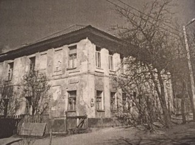
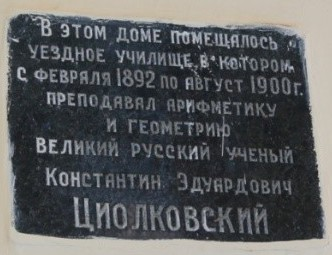
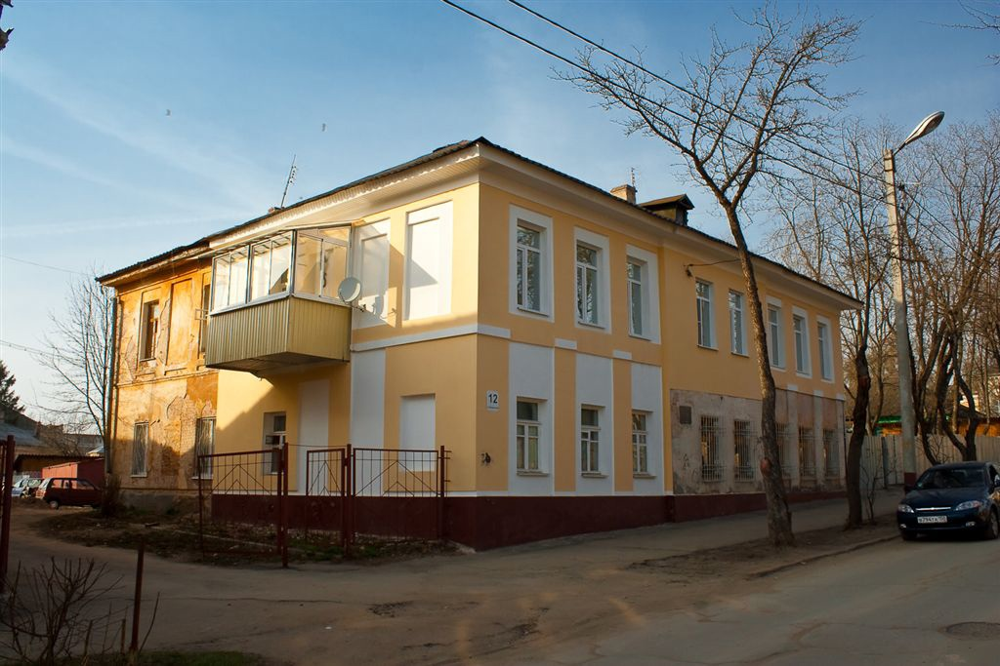

Наш маршрут
Старт
Здание Калужского уездного училища (ул. Воскресенская,12). Это двухэтажное здание было построено в 1783 году. В нём располагалась Воскресенская богадельня для престарелых инвалидов. В 1830 году по решению духовных властей призреваемых перевели в другую богадельню, а дом было решено снести. Благодаря губернскому архитектору Николаю Фёдоровичу Соколову дом удалось сохранить. Городские власти купили дом, провели там ремонт и в 1834 году в здании было размещено уездное училище.
Уездное училище это вторая (после приходского училища) ступень образования в России XIX века. Такие учебные заведения открывались в губернских и уездных городах для подготовки учащихся «всякого звания». В 2-летний курс образования входили следующие предметы: закон божий, священная история, изучение книги «О должностях человека и гражданина», русская грамматика и грамматика родного языка, чистописание, всеобщая и русская география, всеобщая и русская история, арифметика, начальные сведения по геометрии, физике и естественной истории, рисование. По уставу 1828 года ставшие 3-классными училища в основном предназначались для детей купцов и мещан. В них преподавались закон божий, священная и церковная история, русский язык, арифметика, геометрия, география, русская и всеобщая история, чистописание, черчение и рисование. В 1881 году училище было трехгодичным, в нем обучалось 140 мальчиков. Смотрителем училища был коллежский асессор Аркадий Петрович Соколов, законоучителем - священник Алексей Антонович Беляев, преподавателем русского языка — состоящий в XII классе Яков Федоров Покровский, арифметики и геометрии — коллежский секретарь Семен Григорьевич Прозоровский, истории и географии — состоящий в XII классе Илья Михайлович Ладожин, чистописания, черчения и рисования - губернский секретарь Иван Васильевич Костырев. С февраля 1892 года по август 1900 года арифметику и геометрию преподавал Константин Эдуардович Циолковский. В настоящее время жилой дом.
Место02
Мы предлагаем уникальные пешие путешествия по историческим местам Калуги. Присоединяйтесь к нашим экскурсиям и узнайте больше о культуре и истории города!
Место03
Мы предлагаем уникальные пешие путешествия по историческим местам Калуги. Присоединяйтесь к нашим экскурсиям и узнайте больше о культуре и истории города!
Место04
Мы предлагаем уникальные пешие путешествия по историческим местам Калуги. Присоединяйтесь к нашим экскурсиям и узнайте больше о культуре и истории города!
Финиш
Мы предлагаем уникальные пешие путешествия по историческим местам Калуги. Присоединяйтесь к нашим экскурсиям и узнайте больше о культуре и истории города!
О нас
Мы предлагаем уникальные пешие путешествия по историческим местам Калуги. Присоединяйтесь к нашим экскурсиям и узнайте больше о культуре и истории города!
Контакты
Телефон: +7 (123) 456-78-90
Email: info@kalugawalks.ru